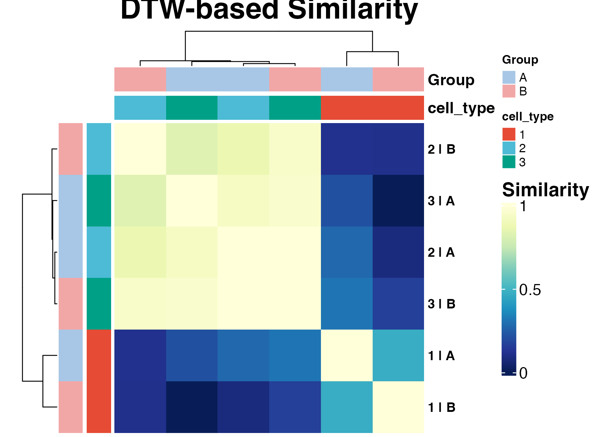
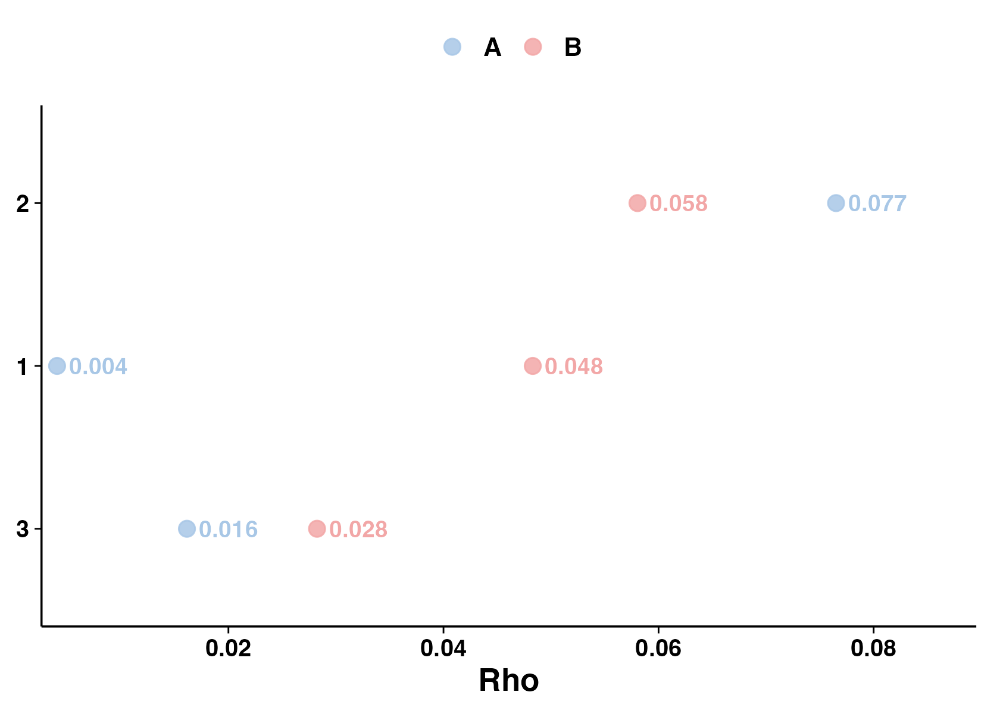
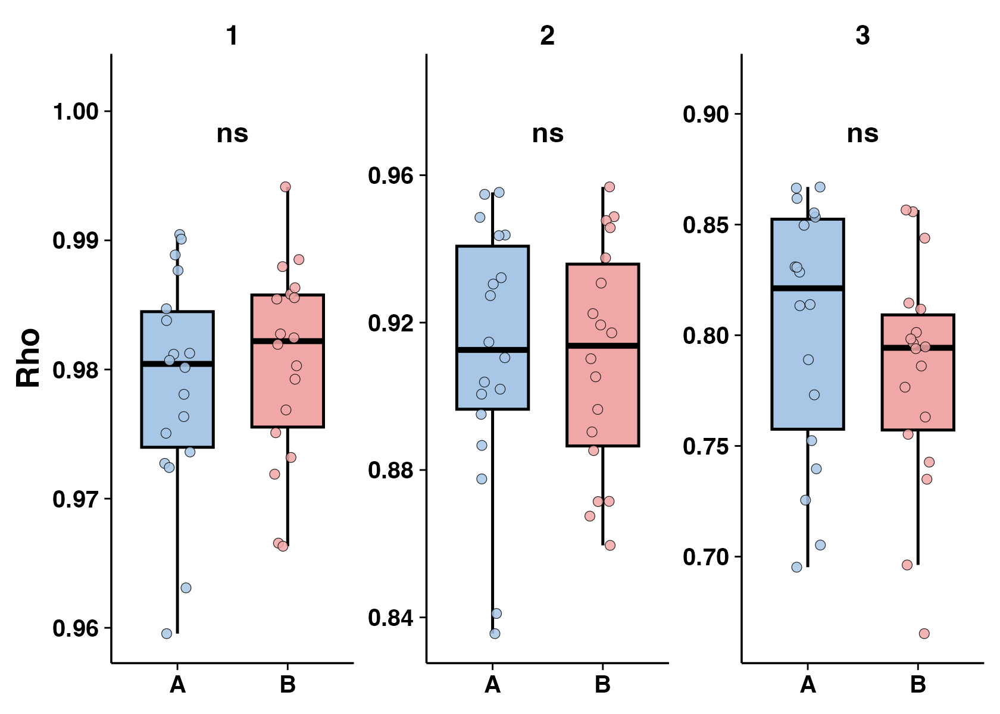

DTW and rho phase-prioritization analysis
Source:vignettes/phase-prioritization-dtw-rho.Rmd
phase-prioritization-dtw-rho.RmdOverview
This tutorial describes two phase-level extension analyses in
scRhythmBayes:
- DTW-based phase-distribution similarity
- Circular phase-concentration rho analysis
These analyses are useful for prioritizing cell types, conditions, or celltype-by-condition combinations that show differences in inferred circadian phase distributions.
Unlike rhythm-state module analysis or one-vs-rest rhythmic program discovery, DTW and rho analyses operate mainly at the cell-phase level. They use the inferred cell-level phase result and cell-level metadata, rather than gene-level parameter tables.
The typical use case is:
- infer cell-level circadian phase;
- compare phase distributions across cell types and groups;
- prioritize cell types or conditions with strong phase-distribution remodeling;
- perform downstream gene-level rhythm-state analysis on selected biological contexts.
Load package and example data
library(scRhythmBayes)
data("srb_example_data")
count <- srb_example_data$Count
metadata <- srb_example_data$meta
dim(count)
#> NULL
head(metadata)
#> cell sample replicate ZT celltype condition
#> Cell_0001_001 Cell_0001_001 A_ZT00_R1 1 0 1 A
#> Cell_0001_002 Cell_0001_002 A_ZT00_R1 1 0 1 A
#> Cell_0001_003 Cell_0001_003 A_ZT00_R1 1 0 1 A
#> Cell_0001_004 Cell_0001_004 A_ZT00_R1 1 0 1 A
#> Cell_0001_005 Cell_0001_005 A_ZT00_R1 1 0 1 A
#> Cell_0001_006 Cell_0001_006 A_ZT00_R1 1 0 1 A
#> T_true Theta_true Theta_noisy r_sim
#> Cell_0001_001 23.7745644 6.22416640 6.0883578 0.7240322
#> Cell_0001_002 23.7111107 6.20755425 6.0324486 0.6303893
#> Cell_0001_003 22.2182691 5.81672924 5.8263271 0.8666633
#> Cell_0001_004 0.5581621 0.14612650 0.2245110 0.8593562
#> Cell_0001_005 0.7203817 0.18859549 0.3327113 0.6901345
#> Cell_0001_006 0.1788832 0.04683152 0.1722017 0.7564754
table(metadata$celltype, metadata$condition)
#>
#> A B
#> 1 360 360
#> 2 360 360
#> 3 360 360The example dataset contains:
| Object | Description |
|---|---|
count |
Gene-by-cell sparse count matrix |
metadata |
Cell-level metadata containing sampling time, cell type, condition, and simulated true phase |
The key metadata columns used in this tutorial are:
| Column | Description |
|---|---|
cell |
Cell identifier |
sample |
Independent biological sample |
replicate |
Replicate within condition and ZT |
ZT |
Sampling Zeitgeber time |
celltype |
Cell-type label |
condition |
Group or condition label |
T_true |
Simulated true circadian time in hours |
Theta_true |
Simulated true circadian phase in radians |
Theta_noisy, r_sim
|
Simulated noisy phase truth retained for validation |
Step 1: infer cell-level circadian phase
Both DTW and rho analyses start from the inferred cell-level circadian phase.
res_phase <- infer_cell_phase(
count = count,
metadata = metadata,
ZT_by = "ZT",
strata_by = "celltype",
Species = "mouse",
setseed = 1,
Verbose = FALSE
)
head(res_phase)
#> # A tibble: 6 × 7
#> cell ZT_input stratum theta_pred ZT_pred Rbar r_cell
#> <chr> <dbl> <chr> <dbl> <dbl> <dbl> <dbl>
#> 1 Cell_0001_001 0 1 6.19 23.6 0.992 0.999
#> 2 Cell_0001_002 0 1 6.23 23.8 0.991 0.999
#> 3 Cell_0001_003 0 1 6.00 22.9 0.991 0.999
#> 4 Cell_0001_004 0 1 6.14 23.4 0.989 0.999
#> 5 Cell_0001_005 0 1 0.142 0.543 0.992 0.999
#> 6 Cell_0001_006 0 1 0.137 0.524 0.991 0.999The main columns used by downstream phase-prioritization analyses are:
| Column | Description |
|---|---|
cell |
Cell identifier |
theta_pred |
Inferred cell-level circadian phase in radians |
ZT_pred |
Inferred phase converted to 24-hour time |
r_cell |
Cell-level phase reliability weight |
Analysis design
The phase-prioritization branch can be used in several common settings.
| Analysis goal | Function | Main grouping variables | Main output |
|---|---|---|---|
| Compare full phase-distribution shapes | run_dtw_similarity() |
celltype_by, group_by
|
DTW distance and similarity matrices |
| Summarize phase concentration by group | run_phase_rho() |
celltype_by, group_by
|
Group-level rho summary |
| Compare sample-level phase concentration |
run_phase_rho() with sample_by
|
celltype_by, group_by,
sample_by
|
Sample-level rho table and group comparison |
DTW is useful when the question is whether two phase distributions have similar shapes. Rho is useful when the question is whether cells within a cell type or group are concentrated around a phase or broadly dispersed.
Part I: DTW-based phase-distribution similarity
Input
The DTW analysis requires:
| Argument | Description |
|---|---|
res_phase |
Cell-level phase inference result from
infer_cell_phase()
|
metadata |
Cell-level metadata |
celltype_by |
Metadata column defining cell type or biological compartment |
group_by |
Metadata column defining condition or group |
min_cell |
Minimum number of cells required for each celltype-by-group combination |
The function constructs circular phase histograms for each celltype-by-group combination and compares these histograms using dynamic time warping.
Run DTW similarity analysis
dtw_res <- run_dtw_similarity(
res_phase = res_phase,
metadata = metadata,
celltype_by = "celltype",
group_by = "condition",
min_cell = 10,
Verbose = FALSE
)
dtw_res
#> scRhythmDTWSimilarity object
#> Combinations: 6
#> Bins: 24
#> Groups: A, B
#> Cell types: 1, 2, 3
#>
#> cell_type Group n_cell combo
#> 1 1 A 360 1 | A
#> 4 1 B 360 1 | B
#> 2 2 A 360 2 | A
#> 5 2 B 360 2 | B
#> 3 3 A 360 3 | A
#> 6 3 B 360 3 | BInspect circular phase histograms
head(dtw_res$histogram)
#> combo cell_type Group bin bin_start bin_end bin_mid prop
#> 1 1 | A 1 A 1 0.0000000 0.2617994 0.1308997 0.05833333
#> 2 1 | A 1 A 2 0.2617994 0.5235988 0.3926991 0.02222222
#> 3 1 | A 1 A 3 0.5235988 0.7853982 0.6544985 0.01666667
#> 4 1 | A 1 A 4 0.7853982 1.0471976 0.9162979 0.06388889
#> 5 1 | A 1 A 5 1.0471976 1.3089969 1.1780972 0.07500000
#> 6 1 | A 1 A 6 1.3089969 1.5707963 1.4398966 0.01111111The histogram table contains binned circular phase distributions for each celltype-by-condition combination.
| Column | Description |
|---|---|
combo |
Combined celltype-by-group label |
cell_type |
Cell-type label |
Group |
Group or condition label |
bin |
Circular phase bin index |
bin_start, bin_end
|
Phase-bin boundaries in radians |
bin_mid |
Phase-bin midpoint |
prop |
Proportion of cells in the phase bin |
Inspect DTW similarity matrix
dtw_res$similarity
#> 1 | A 1 | B 2 | A 2 | B 3 | A 3 | B
#> 1 | A 1.0000000 0.4730539 0.2743924 0.1117194 0.2089335 0.3072317
#> 1 | B 0.4730539 1.0000000 0.0807574 0.1062086 0.0000000 0.1623240
#> 2 | A 0.2743924 0.0807574 1.0000000 0.8754491 0.9337795 1.0000000
#> 2 | B 0.1117194 0.1062086 0.8754491 1.0000000 0.8323353 0.9520958
#> 3 | A 0.2089335 0.0000000 0.9337795 0.8323353 1.0000000 0.9628112
#> 3 | B 0.3072317 0.1623240 1.0000000 0.9520958 0.9628112 1.0000000The result object contains:
| Output | Meaning |
|---|---|
data |
Merged cell-level phase and metadata table |
histogram |
Circular phase histogram for each celltype-by-group combination |
distance |
Pairwise DTW distance matrix |
similarity |
Scaled 0-to-1 DTW similarity matrix |
annotation |
Annotation table for heatmap rows and columns |
A higher similarity value indicates a more similar inferred phase-distribution profile. A lower similarity value indicates a stronger phase-distribution difference.
Plot DTW heatmap
ht_dtw <- plot_dtw_heatmap(
dtw_res = dtw_res
)
ht_dtw
#> scRhythmDTWHeatmap object
#> Matrix type: similarity
#> Matrix dimension: 6 x 6
plot(ht_dtw)
The DTW heatmap provides a compact overview of phase-distribution similarity across celltype-by-condition combinations.
Part II: circular phase-concentration rho analysis
Concept
The rho analysis summarizes the concentration of inferred cell phases. Larger rho indicates that cells are more concentrated around a common phase. Smaller rho indicates a more dispersed phase distribution.
This analysis is useful for identifying cell types or conditions with strong phase alignment or phase dispersion.
Input
The group-level rho analysis requires:
| Argument | Description |
|---|---|
res_phase |
Cell-level phase inference result |
metadata |
Cell-level metadata |
celltype_by |
Metadata column defining cell type |
group_by |
Metadata column defining condition or group |
theta_by |
Column in res_phase containing inferred phase in
radians |
group_levels |
Optional display or comparison order for groups |
min_cell |
Minimum number of cells required per celltype-by-group combination |
Run group-level rho analysis
rho_res <- run_phase_rho(
res_phase = res_phase,
metadata = metadata,
celltype_by = "celltype",
group_by = "condition",
theta_by = "theta_pred",
group_levels = c("A", "B"),
min_cell = 10,
Verbose = FALSE
)
rho_res
#> scRhythmPhaseRho object
#>
#> Group-level rho:
#> cell_type Group n_cell rho mean_phase_rad mean_phase_hour rho_mean
#> 1 1 A 360 0.004067866 5.66087818 21.622962 0.02618392
#> 2 1 B 360 0.048299964 0.07905898 0.301983 0.02618392
#> 3 2 A 360 0.076505117 3.80882367 14.548635 0.06727230
#> 4 2 B 360 0.058039490 3.05496773 11.669117 0.06727230
#> 5 3 A 360 0.016142579 1.57051585 5.998929 0.02219223
#> 6 3 B 360 0.028241886 5.51204730 21.054470 0.02219223
#>
#> Sample-level group comparison: not availableInspect group-level rho table
rho_res$rho_group
#> NULLThe group-level rho table contains:
| Column | Description |
|---|---|
cell_type |
Cell-type label |
Group |
Group or condition label |
n_cell |
Number of cells used |
rho |
Circular phase concentration statistic |
mean_phase_rad |
Mean circular phase in radians |
mean_phase_hour |
Mean circular phase converted to 24-hour time |
Plot group-level rho
p_rho <- plot_phase_rho(rho_res)
p_rho$plot
The plot summarizes phase concentration across cell types and groups.
Part III: sample-level rho analysis
Sample-level rho analysis is useful when the dataset contains biological sample IDs, replicate IDs, patient IDs, animal IDs, or other sample-level units.
The example data contain 36 sample IDs assigned during simulation. They are independent experimental units, not labels randomly added to cells.
sample_design <- unique(
metadata[c("sample", "condition", "ZT", "replicate")]
)
nrow(sample_design)
#> [1] 36
with(sample_design, table(condition, ZT))
#> ZT
#> condition 0 4 8 12 16 20
#> A 3 3 3 3 3 3
#> B 3 3 3 3 3 3Run sample-level rho analysis
rho_res_sample <- run_phase_rho(
res_phase = res_phase,
metadata = metadata,
celltype_by = "celltype",
group_by = "condition",
sample_by = "sample",
theta_by = "theta_pred",
group_levels = c("A", "B"),
compare_groups = c("A", "B"),
min_cell = 10,
Verbose = FALSE
)
head(rho_res_sample$rho_sample)
#> cell_type Group Sample n_cell rho mean_phase_rad mean_phase_hour
#> 1 1 A A_ZT00_R1 20 0.9812679 0.007222493 0.02758789
#> 2 1 A A_ZT00_R2 20 0.9727272 6.261130650 23.91575741
#> 3 1 A A_ZT00_R3 20 0.9724092 0.065011902 0.24832717
#> 4 1 A A_ZT04_R1 20 0.9904582 1.116099149 4.26318472
#> 5 1 A A_ZT04_R2 20 0.9595515 1.022346888 3.90507746
#> 6 1 A A_ZT04_R3 20 0.9838027 0.999653055 3.81839340The sample-level rho table contains one row per celltype-by-group-by-sample unit.
| Column | Description |
|---|---|
cell_type |
Cell-type label |
Group |
Group or condition label |
Sample |
Sample identifier |
n_cell |
Number of cells in the sample-level unit |
rho |
Sample-level circular phase concentration |
mean_phase_rad |
Mean circular phase in radians |
mean_phase_hour |
Mean circular phase converted to 24-hour time |
Plot sample-level rho
p_rho_sample <- plot_phase_rho(rho_res_sample)
p_rho_sample$plot
The sample-level plot and statistical comparison use sample-level rho values. This distinguishes biological-sample variation from the number of cells observed within each sample.
Recommended minimal workflow
dtw_res <- run_dtw_similarity(
res_phase = res_phase,
metadata = metadata,
celltype_by = "celltype",
group_by = "condition",
min_cell = 10,
Verbose = FALSE
)
ht_dtw <- plot_dtw_heatmap(dtw_res = dtw_res)
plot(ht_dtw)
rho_res <- run_phase_rho(
res_phase = res_phase,
metadata = metadata,
celltype_by = "celltype",
group_by = "condition",
theta_by = "theta_pred",
group_levels = c("A", "B"),
min_cell = 10,
Verbose = FALSE
)
p_rho <- plot_phase_rho(rho_res)
p_rho$plotOutput summary
| Object | Description |
|---|---|
dtw_res |
DTW-based phase-distribution similarity result |
dtw_res$histogram |
Circular phase histograms by celltype-by-group combination |
dtw_res$distance |
Pairwise DTW distance matrix |
dtw_res$similarity |
Scaled DTW similarity matrix |
rho_res |
Group-level circular phase-concentration result |
rho_res$rho_group |
Group-level rho summary |
rho_res_sample |
Sample-level circular phase-concentration result |
rho_res_sample$rho_sample |
Sample-level rho summary |
Notes for real datasets
For real datasets, users should choose grouping variables based on the biological question.
Use DTW analysis when the main question is:
- Which cell types or conditions have similar inferred phase distributions?
- Which celltype-by-condition combinations show phase-distribution remodeling?
- Which biological contexts should be prioritized for downstream rhythm-state module analysis?
Use rho analysis when the main question is:
- Are cells in a given cell type or condition phase-concentrated?
- Does phase concentration differ between conditions?
- Is phase concentration consistent across biological samples?
For sample-level rho analysis, sample_by should
correspond to real biological replicate structure, such as animal ID,
patient ID, donor ID, or sample ID.
Session information
sessionInfo()
#> R version 4.5.1 (2025-06-13)
#> Platform: aarch64-apple-darwin20
#> Running under: macOS Sequoia 15.5
#>
#> Matrix products: default
#> BLAS: /Library/Frameworks/R.framework/Versions/4.5-arm64/Resources/lib/libRblas.0.dylib
#> LAPACK: /Library/Frameworks/R.framework/Versions/4.5-arm64/Resources/lib/libRlapack.dylib; LAPACK version 3.12.1
#>
#> locale:
#> [1] C.UTF-8/C.UTF-8/C.UTF-8/C/C.UTF-8/C.UTF-8
#>
#> time zone: Asia/Shanghai
#> tzcode source: internal
#>
#> attached base packages:
#> [1] stats graphics grDevices utils datasets methods base
#>
#> other attached packages:
#> [1] scRhythmBayes_0.1.0
#>
#> loaded via a namespace (and not attached):
#> [1] gtable_0.3.6 circlize_0.4.18 shape_1.4.6.1
#> [4] rjson_0.2.23 xfun_0.57 bslib_0.10.0
#> [7] ggplot2_4.0.2 htmlwidgets_1.6.4 GlobalOptions_0.1.4
#> [10] ggrepel_0.9.8 lattice_0.22-9 Cairo_1.7-0
#> [13] vctrs_0.7.3 tools_4.5.1 generics_0.1.4
#> [16] stats4_4.5.1 parallel_4.5.1 tibble_3.3.1
#> [19] proxy_0.4-29 cluster_2.1.8.2 pkgconfig_2.0.3
#> [22] Matrix_1.7-5 RColorBrewer_1.1-3 S7_0.2.1
#> [25] desc_1.4.3 S4Vectors_0.46.0 lifecycle_1.0.5
#> [28] circular_0.5-2 compiler_4.5.1 farver_2.1.2
#> [31] textshaping_1.0.5 codetools_0.2-20 ComplexHeatmap_2.24.1
#> [34] clue_0.3-68 htmltools_0.5.9 sass_0.4.10
#> [37] yaml_2.3.12 pillar_1.11.1 pkgdown_2.2.0
#> [40] crayon_1.5.3 jquerylib_0.1.4 MASS_7.3-65
#> [43] cachem_1.1.0 iterators_1.0.14 boot_1.3-32
#> [46] foreach_1.5.2 tidyselect_1.2.1 digest_0.6.39
#> [49] mvtnorm_1.3-6 dplyr_1.2.1 labeling_0.4.3
#> [52] fastmap_1.2.0 grid_4.5.1 colorspace_2.1-2
#> [55] cli_3.6.6 magrittr_2.0.5 dichromat_2.0-0.1
#> [58] utf8_1.2.6 withr_3.0.2 scales_1.4.0
#> [61] rmarkdown_2.31 matrixStats_1.5.0 otel_0.2.0
#> [64] ragg_1.5.2 png_0.1-9 GetoptLong_1.1.1
#> [67] evaluate_1.0.5 knitr_1.51 IRanges_2.42.0
#> [70] dtw_1.23-3 doParallel_1.0.17 rlang_1.2.0
#> [73] Rcpp_1.1.1 glue_1.8.0 BiocGenerics_0.54.1
#> [76] jsonlite_2.0.0 R6_2.6.1 systemfonts_1.3.2
#> [79] fs_2.0.1